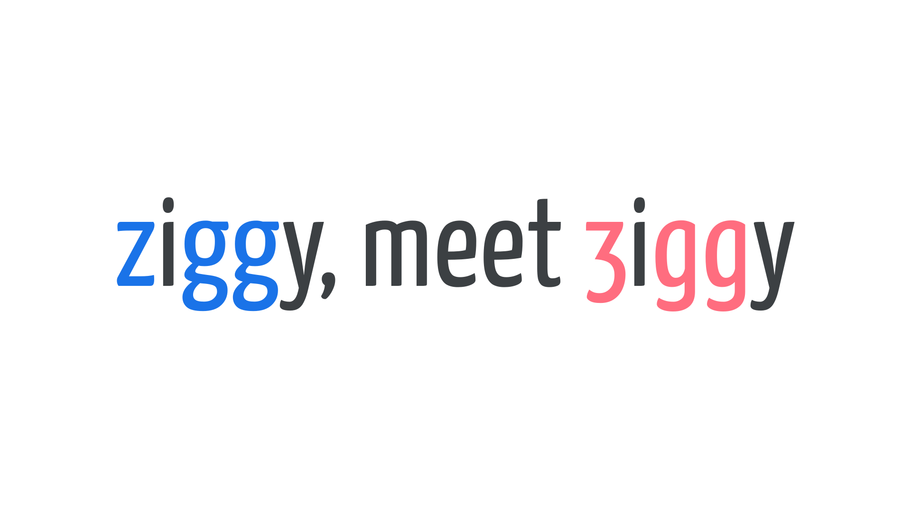

Alternates
By Google Fonts Knowledge contributors · Google Fonts Knowledge.
Original article · Source on GitHub · CC BY-SA 4.0. Text, illustrations and existing credits reproduced from the licensed Knowledge repository. Open Shelf adapted the layout and links; these adaptations are also CC BY-SA 4.0. No endorsement implied.
Alternates (also known as alternate characters or alternate glyphs) are substitute letterforms that supplement the default character set.
They usually serve one of two purposes:
- To add variety to repeated characters (for example, you might use multiple alternate glyphs in text that’s meant to appear hand-lettered, or hand-distressed).
- To account for the end user’s preference for different characteristics, such as the more unusual z and g glyphs in Yanone Kaffeesatz.

Accessing alternates can be achieved via OpenType either on a per-glyph level or by applying a stylistic set to an entire piece of text. Contextual alternates, if enabled, can intelligently appear according to which glyphs they sit next to.